Gitara sa skladá z tela (korpusu), krku a hlavice.
Telo vytvára vrchná ozvučná doska, ktorá je vyrobená zo smrekového, jedľového dreva (alebo cédru) a má podstatný vplyv na zvuk nástroja. Skladá sa z dvoch sesterských polovíc, ktoré sú zlepené. Na ozvučnej doske je vyrezaný ozvučný otvor, ktorého veľkosť, tvar a umiestnenie má tiež vplyv na zvuk nástroja. Okolo zvukového otvoru je ozdobná výstuha zvaná intarzia.
Ozvučná doska je z vnútornej strany spevnená tzv. rebrami s počtom 5 - 7. Na ozvučnej doske je prilepená kobylka, ktorá prenáša chvenie strún na ozvučnú doske. Je vyrobená z tvrdého dreva a má vyrezanú drážku, do ktorej je vložený spodný pražec z umelého materiálu. Spodná ozvučná doska je vyrobená z javorového dreva alebo z exotického palisandra alebo mahagónu. Je zlepená z dvoch sesterských polovíc a spevnená priečnymi rebrami. Vrchná a spodná doska sú spojené po bokoch lubmi, ktoré sú vyrobené z toho istého dreva ako spodná doska.
Krk je vyrobený z tvrdého dreva. Skladá sa z hmatníka, na ktorom je zapustených 19 pražcov, ktoré rozdeľujú dĺžku struny na určitú vzdialenosť a sú rozmiestené do temperovaného ladenia po poltónoch. Na konci hmatníka sa nachádza malý pražec, cez ktorý sa vedú struny. Je vyrobený z umelej hmoty.
Na hlavici je upevnená ladiaca mechanika na šesť strún.
Struny na gitare
Gitara má šesť strún: 1E, 2H, 3G, 4D, 5A, 6E.
Mnemotechnická pomôcka: Emil Hodil Granát Do Atómovej Elektrárne
Hudobná abeceda pozostáva zo siedmich písmen abecedy: A, B, C, D, E, F, G.
U nás sa namiesto písmena B používa H. Po písmenách nasledujú čísla, ktoré označujú oktávy.
Napríklad C4 je stredné C (C v 4. oktáve).
V anglickej hudobnej abecede sa namiesto písmena H používa B.
Podrobnosti o používaní H si môžete prečítať v nasledujúcom článku:
Wikipedia - Nota.
Výňatok z článku:
V histórii európskej hudby vznikla potreba jasne rozlíšiť normálnu a zníženú formu vtedy zapisovanej noty B:
Znížená nota: Zapisovala sa pomocou „okrúhleho“ b (b rotundum / b molle).
Normálna nota: Zapisovala sa pomocou „hranatého“ b (b quadratum / b durum).
V nemecky hovoriacich krajinách spôsobilo vtedajšie písmo to, že hranaté b quadratum vyzeralo takmer ako malé písmeno h, čo časom viedlo k jeho čítaniu ako nota H.
Neskôr, keď vznikla potreba upravovať aj ostatné tóny, sa postupne prešlo na systém posuviek:
Z b rotundum sa vyvinulo béčko (♭).
Z b quadratum vznikla odrážka ((♮)).
Pomenovanie noty B ako H však v nemeckej oblasti už zostalo.
Pre ostatné tóny sa pri úpravách pomocou posuviek ((♯) a (♭)) začali používať prípony -is a -es.
Tento systém prevzali prakticky všetky nemecky hovoriace krajiny, štáty bývalého Rakúsko-Uhorska a ďalšie regióny pod nemeckým vplyvom, pričom mnohé z nich ho používajú dodnes.
My používame namiesto písmena B
písmeno H (A H
C D E F G). Hudobná abeceda začína
písmenom C a končí sa písmenom C;
je takáto :
CDEFGAHC
Je to zároveň stupnica C dur.
Najmenšia vzdialenosť medzi tónmi je
poltón.
V hudobnej abecede sú dva
poltóny a to medzi tónmi E - F a H - C.
Toto pravidlo je potrebné si zapamätať, lebo medzi tieto dva tóny nevsunieme
iný tón.
Medzi ostatnými písmenami je vzdialenosť celý tón a
môžeme medzi nich vložiť
spodný zvýšený alebo vrchný znížený
poltón. Takto nám vzniknú na jednej klávese (alebo na gitare v jednom poli)
dva tóny, ktoré rovnako znejú ak ich zahráme, ale majú dve rôzne mená.
C
C# Db
D
D# Eb
E
F
F# Gb
G
G# Ab
A
A# Bb
H
C
Tóny "cis, des", "dis, es", "fis, ges", "gis, as",
"ais, b" znejú rovnako vysoko a hrajú sa v tom istom poli na gitare (tá
istá klávesa) ale majú rozdielne mená.
Tóny, ktoré rovnako znejú ale ináč sa píšu nazývame enharmonické.
Rad, ktorý takto vznikol nazývame chromatický. Chromatický rad obsahuje všetky tóny, ktoré sa v hudbe používajú.
Na klavíri sú tóny rozložené takto:
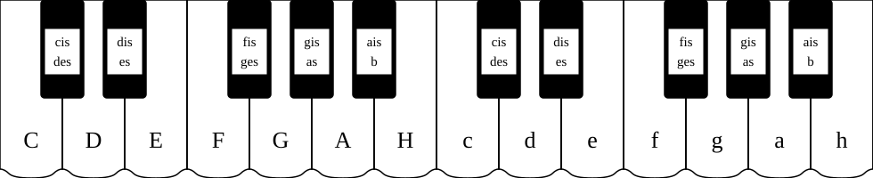
Notová osnova, , kľúče, výška nôt
Notová osnova je základným priestorom pre zápis hudobných myšlienok.
Skladá sa z 5 rovnobežných horizontálnych čiar a 4 medzier medzi nimi.
Čiary aj medzery sa v hudobnej teórii vždy počítajú zdola nahor (1. čiara je najspodnejšia).
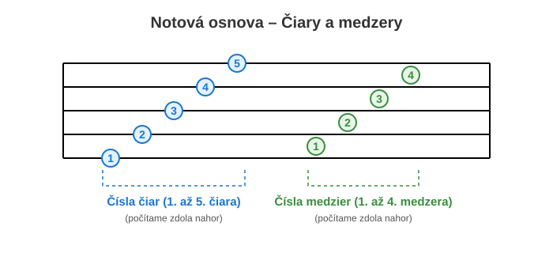
Do notovej osnovy sa zapisujú noty, pričom ich poloha určuje výšku tónu:
čím vyššie je nota v osnove umiestnená, tým vyšší tón znázorňuje.
Hlavné prvky pre určovanie výšky tónu:
Notové kľúče:
Kľúče slúžia na určovanie presnej výšky a názvu noty na danej čiare, kde sa začína písať kľúč.
Husľový kľúč (G-kľúč), sa začína písať na druhej čiare zdola,
určuje tón g1 na druhej čiare zdola.
Basový kľúč (F-kľúč) pre nižšie tóny, sa začína písať na štvrtej čiare,
určuje tón f na štvrtej čiare.
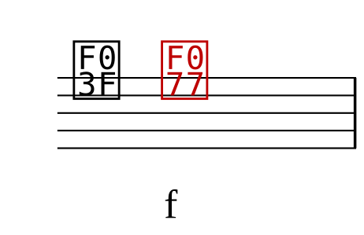
Pomocné čiary: Ak tón presahuje rozsah 5 hlavných čiar notovej osnovy
(je príliš vysoký alebo príliš nízky), používajú sa krátke pomocné čiary pod alebo
nad notovou osnovou.
Posuvky (akcidentálie):
Značky umiestnené pred notou, ktoré menia jej základnú výšku:
Krížik (♯): Zvyšuje notu o poltón (pridáva príponu -is, napr. C → Cis).
Béčko (♭): Znižuje notu o poltón (pridáva príponu -es, napr. D → Des). Pri notách e, a sa pridáva iba prípona -s (es, as). Pri note h sa môže použiť hes alebo bé.
Odrážka (♮): Ruší účinok predchádzajúceho krížika alebo béčka a vracia tón na jeho základnú výšku.
Notácia a tóny na gitare
V notácii sa gitarové tóny značia o oktávu vyššie ako v skutočnosti znejú.
Tóny na gitare v notácii sú rozdelené po pražcoch takto:
Ladenie gitary
Ako vidno z nákresu, niektoré tóny sa opakujú a sú výškovo rovnaké. Z toho vyplýva aj ladenie gitary. Naladíme si strunu E2 podľa ladičky, klavíra alebo nástroja, ktorý má pevné ladenie (akordeón...).
Strunu H ladíme podľa struny E tak, že strunu H stlačíme v V. poli a tón by mal znieť unisono (rovnako vysoko) so strunou E.
Strunu G ladíme podľa struny H tak, že strunu G stlačíme v IV. poli a porovnáme so strunou H.
Strunu D ladíme podľa struny G, ak strunu D stlačíme v V. poli.
Strunu A podľa struny D a strunu E podľa struny A, ktoré tiež stláčame v V. poli.
Pre začiatočníkov a menej skúsených je najľahšie ladenie podľa elektronickej ladičky, kde ručička ukazuje, či je struna správne naladená.
Noty podľa dĺžky
Rozdelenie nôt podľa ich trvania (dĺžky) patrí k základom hudobnej teórie.
Dĺžka noty určuje, ako dlho má tón znieť, a odvíja sa od celej noty,
ktorá slúži ako základná jednotka.
Každá ďalšia nota má presne polovičnú dĺžku než nota pred ňou.
Celá nota (1): Znie najdlhšie, spravidla sa počíta na 4 doby (predstavuje celé jablko).
Zapisuje sa ako prázdna oválna hlavička bez nožičky.
Polová nota (1/2): Trvá polovicu času celej noty, teda sa počíta na 2 doby.
Zapisuje sa ako prázdna hlavička s nožičkou. Jedna celá nota sa delí na 2 polové noty.
Štvrťová nota (1/4): Znie 1 dobu. Zapisuje sa ako plná (vyplnená) hlavička s nožičkou. Jedna celá nota obsahuje 4 štvrťové noty.
Osminová nota (1/8): Trvá pol doby (počítame ju na „raz-a“). Má plnú hlavičku, nožičku a zástavku (alebo je spojená trámcom s ďalšou osminovou notou). Do jednej celej noty sa zmestí 8 osminových nôt.
Šestnástinová nota (1/16): Znie len štvrtinu doby (veľmi rýchly tón). Má plnú hlavičku a dve zástavky (alebo dvojitý trámec). Jedna celá nota sa delí na 16 šestnástinových nôt.
Rovnakým spôsobom a v rovnakých dĺžkach existujú aj pomlčky (celá, polová, štvrťová, osminová, šestnástinová), ktoré namiesto znenia tónu označujú presnú dĺžku ticha.
Taktové označenie
Taktové označenie (takt) určuje rytmický pulz a metrum skladby.
Zapisuje sa na začiatku skladby za husľovým alebo basovým kľúčom v podobe dvoch čísel nad sebou
(ako zlomok bez zlomkovej čiary).Tieto dve čísla dávajú hudobníkovi presný návod,
ako má počítať:
Horné číslo (počet dôb): Udáva, koľko dôb sa nachádza v jednom takte.
Dolné číslo (hodnota doby): Udáva, jaká nota predstavuje jednu dobu
(napr. číslo 4 znamená štvrťovú notu, číslo 8 osminovú notu).
Najčastejšie používané takty:
Dvojdobé takty
2/4 takt (dvojštvrťový - štvrťová nota je na jednu dobu): Počíta sa na 2 doby (prvá – druhá).
Je typický pre pochody, polky alebo ľudové piesne.
2/8 takt (dvojosminový - osminová nota je na jednu dobu): Počíta sa na 2 doby, pričom každá doba je osminová nota.
2/2 takt (dvojpolový): Počíta sa na 2 doby, pričom každá doba je polová nota.
Trijdobé takty
3/4 takt (trojštvrťový): Počíta sa na 3 doby (prvá - druhá - tretia),
pričom prvá doba je najsilnejšia (prízvučná). Poznáme ho najmä zo valčíkov.
3/8 takt (trojosminový): Počíta sa na 3 doby, pričom každá doba je osminová nota.
3/2 takt (trojpolový): Počíta sa na 3 doby, pričom každá doba je polová nota.
4/4 takt (štvorštvrťový): Najbežnejší takt v modernej aj klasickej hudbe,
počíta sa na $4$ doby (raz – dva – tri – štyri).
Často sa zapisuje aj pomocou veľkého písmena C.
6/8 takt (šesťosminový): Počíta sa na $6$ osminových dôb,
ktoré sa prirodzene spájajú do dvoch hlavných trojíc (raz-dva-tri, dva-dva-tri).
Často sa s ním stretávame v uspávankách, barcarolách alebo rýchlych tancoch.
Taktové čiary potom v notovom zápise zvisle oddeľujú jednotlivé takty,
čím udržiavajú rytmický poriadok a spravia notový zápis prehľadným.
Počítanie dôb v jednotlivých taktoch
Príklady počítania dôb v dvojdobých taktoch:
Vrchné číslo v taktovom označení udáva počet dôb v takte, dolné číslo určuje hodnotu doby (nota, ktorá sa má počítať na jednu dobu).
V dvojdobom takte 2/4 sa počíta na 2 doby (prvá – druhá), pričom každá doba je štvrtová nota a tá sa môže rozdeľovať (na dve osminové, alebo štyri šestnástinové) alebo spájať (do jednej polovej noty).
V dvojdobom takte 2/8 sa počíta na 2 doby, pričom každá doba je osminová nota.
V dvojdobom takte 2/2 sa počíta na 2 doby, pričom každá doba je polová nota.
Príklady počítania dôb v trojdobých taktoch:
Vrchné číslo v taktovom označení udáva počet dôb v takte, dolné číslo určuje hodnotu doby (nota, ktorá sa má počítať na jednu dobu).
V trojdobom takte 3/4 sa počíta na 3 doby (prvá – druhá – tretia), pričom každá doba je štvrtová nota a tá sa môže rozdeľovať (na dve osminové, alebo štyri šestnástinové) alebo spájať (do jednej polovej noty).
V trojdobom takte 3/8 sa počíta na 3 doby, pričom každá doba je osminová nota.
V trojdobom takte 3/2 sa počíta na 3 doby, pričom každá doba je polová nota.
Príklady počítania dôb v štvordobých taktoch:
Vrchné číslo v taktovom označení udáva počet dôb v takte, dolné číslo určuje hodnotu doby (nota, ktorá sa má počítať na jednu dobu).
V štvordobom takte 4/4 sa počíta na 4 doby (prvá – druhá – tretia – štvrtá), pričom každá doba je štvrtová nota a tá sa môže rozdeľovať (na dve osminové, alebo štyri šestnástinové) alebo spájať (do jednej polovej noty).
Príklady počítania dôb v šesťdobých taktoch:
Vrchné číslo v taktovom označení udáva počet dôb v takte, dolné číslo určuje hodnotu doby (nota, ktorá sa má počítať na jednu dobu).
V šesťdobom takte 6/8 sa počíta na 6 doby (prvá – druhá – tretia – štvrtá – piata – šiesta), pričom každá doba je osminová nota a tá sa môže rozdeľovať (na dve šestnástinové) alebo spájať (do jednej štvrťovej noty).
Opakovacie znaky a symboly
Opakovacie znamienka (repetície) patria medzi kľúčové prvky hudobnej notácie.
Zabezpečujú prehľadnosť notového zápisu, šetria miesto na papieri a hudobníkom zjednodušujú čítanie skladby.
Namiesto opätovného vypisovania tých istých taktov sa používajú symboly, ktoré interpreta navedú,
ktorú časť má zahrať znova.
Repetícia
Základným znakom je repetícia (dve zvislé čiary s dvoma bodkami).
Ak sa v texte nachádza len jedna repetícia otočená vľavo :||, znamená to, že sa skladba opakuje úplne od začiatku.
Ak sú v notách dve repetície oproti sebe ||: a :||, opakuje sa úsek uzatvorený medzi nimi.
Prima volta a Seconda volta
Pri opakovaní sa často využívajú aj prima volta a seconda volta (prvýkrát a druhýkrát).
Ide o očíslované svorky nad taktmi:
Prima volta (1.): Hrá sa pri prvom prechode úsekom. Na jej konci sa hudobník vráti na začiatok repetície.
Seconda volta (2.): Pri druhom prechode sa takt pod prvou svorkou úplne preskočí a plynulo sa nadviaže do druhej svorky,
ktorou skladba pokračuje ďalej.
Okrem klasických repetícií a volt sa v hudobnom zápise často používajú aj talianske skratky,
ktoré hudobníka navigujú k rozsiahlejším skokom v skladbe.
Sú to označenia D.C. al Fine, D.S. al Fine, D.C. al Coda a D.S. al Coda.
D.C. al Fine
D.C. al Fine (Da Capo al Fine): Skratka doslova znamená „od začiatku do konca“.
Keď interpret narazí na toto označenie, vráti sa na úplný začiatok skladby
a hrá ďalej až po miesto, kde je napísané slovo Fine (koniec).
D.S. al Fine
D.S. al Fine (Dal Segno al Fine): Znamená „od znamenia do konca“.
Na rozdiel od Da Capo sa hudobník nevracia na začiatok skladby,
ale hľadá špeciálny symbol Segno (𝄋, charakteristické prečiarknuté „S“ s dvoma bodkami).
Odtiaľ hrá opäť až po slovo Fine.
D.C. al Coda
D.C. al Coda (Da Capo al Coda): Pokyn navádza k návratu na začiatok (Da Capo),
odkiaľ sa hrá až po prvé označenie Coda (symbol terča 𝄌). alebo To Coda.
Z tohto miesta hudobník okamžite preskočí na záverečnú časť skladby,
označenú ako samostatná Coda (závěr/dohra, symbol terča 𝄌), a dohrá skladbu až do konca.
D.S. al Coda
D.S. al Coda (Dal Segno al Coda): Znamená „od znamenia do záverečnej časti“.
Interpret sa vráti na špeciálny symbol Segno (𝄋) a hrá až po prvé označenie Coda (symbol terča 𝄌, alebo To Coda).
Odtiaľ preskočí na záverečnú časť skladby, označenú ako samostatná Coda (závěr/dohra, symbol terča 𝄌),
a dohrá skladbu až do konca.
Tieto skratky výrazne šetria miesto v notách a udržiavajú zápis prehľadný aj pri zložitejších formách,
akými sú napríklad skladby vo forme A-B-A.
Značenie rytmu
Hlboké tóny (hrubé struny) v notovej osnove sa píšu dole, vysoké tóny (tenké struny) sa píšu hore.
Šípka hore naznačuje, že hráme od hlbokých tónov k vysokým (od hrubých strún k tenkým). Šípka dole naznačuje opačný smer hry.
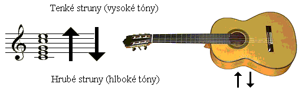
Prvé akordy (C dur, G7)
Akord C dur budeme držať tak, že na strunu H v prvom poli položíme prvý prst a na strunu D v druhom poli položíme druhý prst.
Akord G7 budeme držať tak, že na tenkú E strunu položíme prvý prst do prvého poľa. Tieto akordy nie sú úplné, a preto musíme dbať na to, aby nám nezneli basové struny A, E. Zabránime tomu tým, že na strunu A si oprieme palec.
Prsty dávame tesne pred pražec!
Akordy budeme zakresľovať do diagramu, v ktorom zvislé čiary znamenajú struny a vodorovné čiary sú pražce. Čísla v modrých krúžkoch sú prsty, ktorými máme stlačiť struny.
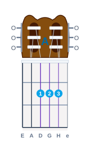
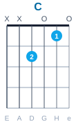
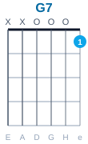
Postup pri nacvičovaní:
Akordy si precvičujeme tak, že si akord chytíme, mierne ho povolíme a znova pritlačme. Celý akord musíme chytiť naraz – neukladáme prsty postupne. Keď si nacvičíme jednotlivé akordy, začneme ich medzi sebou striedať (C dur <-> G7).
Rytmus: Valčík (3/4 takt)
Je to trojdobý takt (počítame pravidelne: prvá - druhá - tretia). Doby musia byť rovnako dlhé.
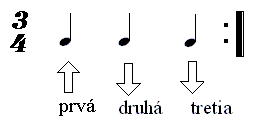
Ukážka rytmu valčík na akorde C
||: :|| Znamienko repetícia označuje časť skladby, ktorú máme opakovať.
Dedinka v údolí
Rytmus: Valčík (3/4)3/4/: C / C / C / C / G7 / G7 / C / C : /
1./: Dedinka v údolí, srdce ma zabolí, keď na teba spomínam : //
/ : G7 / G7 / C / C / G7 / G7 / C / G7 : /
/: Spomínam na teba stále, na tie prekrásne chvíle,
C / C / C / C / G7 / G7 / C / C : /
ktoré sme strávili, lásku si sľúbili, dievčatko roztomilé :/
2. /: Anička, dušička, zavri si očička, nech sa ti o mne sníva : /
/: Prečo je osud tak krutý, prečo som na svete sám,
osudom stíhaný láskou oklamaný verím, že život je klam :/
Trenčianske hodiny
Rytmus: Pomalý valčík (Wals) (3/4)3/4 / : C / C / G7 / C : // : G7 / C / G7 / C / G7 / C : /
1. / : Trenčianske hodiny smutne bijú : /
/ : Už ma s moju milú, už ma s moju milú rozlučujú : /
2. / : Rozlučujú, ale nebojím sa : /
/ : Príde tá hodina, príde tá hodina, ožením sa : /
V hlbokej doline
Rytmus: Valčík (3/4)3/4 C // : C / C / C / C / G7 / C / C : /// : C / C / G7 / G7 / G7 / G7 / G7 / C / C / C / C / C / C / G7 / C / C : /
1. / : V hlbokej doline srnka vodu pije: /
/: horár na ňu mieri, horár na ňu mieri,
horár na ňu mieri, že si ju zastrelí:/
2. / : Nestrieľaj ma horár není som ja srnka: /
/: ale som ja ale, ale som ja ale,
ale som ja ale, zakliata panenka:/
3. /: Zakliala ma mamka v nedeľu za rána :/
/: že som nechcela ísť, že som nechcela ísť,
že som nechcela ísť, za pána horára :/
Červený šátečku
Rytmus: Valčík (3/4)3/4: /: C/G7/C/C/G7/G7/C/C :////: G7/C/G7/C/G7/C/G7/C ://
1. Červený šátečku kolem se toč, kolem se toč, kolem se toč
Můj milej se hněvá já nevím proč, já nevím proč, já nevím proč. Trálalala …
2. Jen se mně má milá pěkne chovej, pěkne chovej, pěkne chovej,
Koupím ti šáteček zase novej, zase novej, zase novej. Trálalala …
Ďalšie akordy a Kadencia
Prechod od akordu C dur k akordu D7 cvičíme tak, že zadržíme prvý prst na druhej strune a druhý a tretí prst preložíme na tretiu a prvú strunu.
A od Prešova
Rytmus: Valčík (3/4)3/4: /3/4 : / : G / G / G / G / G / G / G / D7 / D7 : //// : C / C / G / G / G/ D7 / D7 / G / G : //
1. / : A od Prešova, a od Prešova, a od Prešova v tym poľu : /
/ : neše še Janík serdečko mojo, neše še Janík na koňu : /
2. / : A za ním idze, a za ním idze, a za ním idze ocec mac : /
/ : vrac še Janíčku serdečko mojo, vrac še Janíčku, vrac še vrac : /
3. / : A ja še veru, a ja še veru, a ja še veru nevracim : /
/ : radšej svoj život, serdečko mojo, radšej svoj život utracim : /
Rytmus: Polka (2/4 takt)
Dvojdobý takt, v jednom takte hráme štyri osminové noty. Počítame: "pr-vá-dru-há".
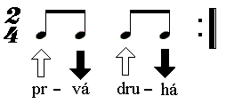
Sedemdesiat sukieň mala
Rytmus: Polka (2/4)2/4 : / : G / G / D7 / G : // G / G / C / G / G / G / D7 / G : /
1. Sedemdesiat sukieň mala a predsa sa nevydala
/ : A ja nemám iba, iba jednu pýtajú ma až za Viedňu : /
2. Sedemtisíc zlatých mala a predsa sa nevydala
/ : a ja nemám ani prsteň zlatý dostal sa mi bajúzatý : /
Tam pod Tatrami
Rytmus: Polka (2/4)2/4 : / : G / G / G / G / G / G / G / D7 / D7 : // : C / C / C / G / G / D7 / D7 / G / G : /
1. / : Tam pod Tatrami v slovenskej zemi strhol sa tam boj preveliký : /
/ : tam bojovali samí Slováci mamky nad nimi zaplakali : /
2. / : Slovenská mamka, jak ste ma ťažko, jak ste ma ťažko vychovali : /
/ : teraz, keď robiť mám o vás sa starať na vojnu si ma povolali : /
3. / : Anička moja, jak sme sa verne, jak sme sa verne milovali : /
/ : tam pod Tatrami v slovenskej zemi tvoj miláčik je pochovaný : /
Ďalšie akordy a Kadencia
Je tu celý tvar akordu G dur a dva nové akordy. V akorde D je preškrtnutá struna "e", pretože tón e nepatrí do akordu D. Pri rytme pravej ruky musíme dávať pozor, aby sme nehrali na tejto strune.
Čo je to stupnica, tónina a kadencia?
Stupnica: Rad tónov usporiadaných podľa jasných hudobných pravidiel.
Tónina: Súhrn tónov rozlične rozostavaných v skladbe. Hovoríme, že skladba je v určitej tónine (napr. C dur).
Kadencia:
je sled troch akordov, ktoré najlepšie charakterizujú určitú tóninu. Tieto tri akordy obsahujú všetky tóny stupnice v danej tónine a používajú sa pri harmonizovaní jednoduchých melódií a ľudových piesní. Sú to hlavné funkcie tóniny a volajú sa tónika (I. stupeň),
subdominanta (IV. stupeň) (spodná dominanta), dominanta (V. stupeň)(vrchná dominanta).
Tvoria sa na prvom, štvrtom a piatom stupni. Hlavným znakom pre dominanty je to, že sú rovnako vzdialené od tóniky, ale opačným smerom - subdominanta na piatom stupni dole, dominanta na piatom stupni hore.
V stupnici C dur je to takto :
F G A
H « C » D
E F G
5 4 3
2
1
2
3 4
5
Tónika je akord,
ktorým sa skladba začína a tiež v tomto akorde končí, je to akord pokoja v ňom sa všetko napätie upokojí a všetok pohyb končí.
Subdominanta je akord, ktorý vyžaduje ďalšie pokračovanie pohybu napr. do dominanty, alebo návrat do tóniky.
Dominanta je akord s najväčším napätím a vyžaduje návrat do tóniky.
Z akordov, ktoré sme doposiaľ prebrali si môžeme zložiť tri kadencie :
Tónika (I.)
Subdominanta (IV.)
Dominanta (V.7)
C
(F)
G7
G
C
D7
D
G
A7
Vydala mamička
Rytmus: Valčík (3/4)3/4 // : D / D / D / D / D / D / A7 / A7 / A7 /A7 / D / D : //// : G / G / G / D / D / D / A7 / A7 / A7 / A7 / D / D : //
1. / : Vydala mamička najstaršiu dcérušku, vydala ju cez pole : /
/: keď ju vydávala, tak jej povedala nechodievaj viac ku mne :/
2. /: Ja sa stanem vtáčkom, tým malým slavíčkom zaletím k svej mamičke :/
/ : sadnem na lavičku pred svoju mamičku na šípovu ružičku : /
3. /: Najmladšia sestrička v okienečku stála na slavíka volala :/
/: heš, heš, heš vtáčičku, ty malý slávičku polámeš mi ružičku :/
4. /: Dobre ti sestrička u svojej mamičky v perinách sa gúľati :/
/: ale mne je horši, bože najmilejší po svete sa túlati :/
Biela ruža
Rytmus: Polka (2/4)2/4 : / : D / D / D / D / G / G / A7 / A7 /// : A7 / A7 / D / D / A7 / A7 / D / D : //
1. Biela ruža rozkvitala, keď som ja k vám chodieval,
/ : do okienka, do vašeho smutne som sa pozeral : /
2. Nebuď smutný, buď veselý, ja ťa predsa rada mám
/ : našu lásku nerozdelí, iba z neba Pán Boh sám : /
3. Z bielej ruže kvet odpadol, ostal iba bodliak sám
/ : naša láska sa zmenila, neverný si mi ostal : /
4. Dobre ti je môj šuhajko, dobre ti je v cudzine
/ : tebe líčka červenejú a mne blednú oboje : /
Rytmus: Tango (4/4 takt)
Počítame pravidelne "prvá - druhá - tretia - štvr-tá".
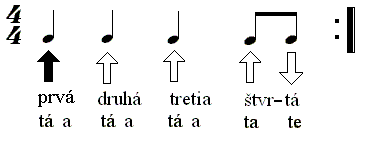
Učiteľka tanca
Učiteľka tanca (P. Hammel)
Rytmus: Tango4/4 : / : D / A7 / A7 / D : /R: / D7 / G / G / D / D / A7 / A7 / DG / D / D A7
1. Otcov oblek biele manžety, vreckové som dostal od tety.
D
Učiteľka tanca je môj sen, pred ňou pod nohami strácam zem.
D A7
R: Učiteľka tanca je môj sen, s ňou sa celkom ináč krúti zem
D
má ľahký krok a má štíhly driek, smutné oči farby fialiek.
D A7
2. Učiteľka tanca ma naučí, ako držat dámy v náručí
D
nám postačí len málo slov, keď sa v rytme tanga vznášam s ňou.
D A7
R: Lokálom už tango tiché znie, tango to je lásky vyznanie
D
bude zo mňa tanga tajný kráľ, kráľ, ktorý sa predtým tanca bál.
D A7
R: Učiteľka tanca je môj sen, s ňou sa celkom ináč krúti zem
D
opája nás vôňou CHANNEL päť, len pre nás dvoch môže hudba znieť.
💡 V predposlednom takte refrénu sú v jednom takte dva akordy (DG). Každý akord zahráme na dve doby.
Deti z Pirea
Rytmus: Tango4/4 : /: D / A7 / A7 / D : // : D / D / D / A7 / A7 / G / G / D :/ D
1. Každého jitra z toho přístavu vyplují bárky a lodě do moří,
A7
a slunce kulaté jak míč s každým úsvitem v dáli se z hlubin vynoří.
D
Jen děti z Pirea se po břehu loudají moře jim nohy omývá.
G D A7 D
Ty modré nedozírné dálky je lákají víc nežli země šedivá.
D A7
Refr: Co moře zpívá, pod křídly kormoránu o tom se zdává k ránu všem dětem z Pirea.
D
Však každý mívá své jedno velké přání sní o něm za svítání jak děti z Pirea.
D
2. Každého večera se k přístavu od moře bárky a lodě vracejí
A7
ty čluny připlouvají s nákladem lib starých lásek a nových nadějí.
D
Jen děti z Pirea však nejsou teď na břehu dávno už museli jít spát
G D A7 D
a budou do ranního úsvitu snít o tom všem o čem snili tolikrát.
Kadencia A dur
I. dur
IV. dur
V. dur7
A
D
E7
Rytmus 4/4 – 1 Prvý
Pre lepšie zapamätanie si rytmu sa ho môžeme naučiť tafetefovať, čo robia aj džezoví hráči pri zložitých rytmických figúrach. Dlhú notu spievame dlhou hláskou, krátku spievame krátkou hláskou. Na šípku hore spievame „ta“, na šípku dole spievame „fe“. Slabiky v slovách rozdeľujeme pravidelne rovnakou rýchlosťou, ako počítame štvrťové doby (prvá - dru - há - tretia - štvr - tá). Rytmus najprv vytlieskame.
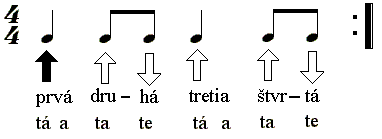
Cvičenie na súhru ľavej a pravej ruky
Chytíme si ľubovoľný akord. Na čiernu šípku akord držíme, na modré šípky akord mierne povolíme, ale prsty sa ešte dotýkajú strún. Postupne, keď si na to zvykneme, dvíhame prsty vyššie nad struny.
V druhom príklade držíme akord na dve čierne šípky a na modrú šípku akord pustíme. Prsty, aj keď zdvihneme nad struny, musia akord držať vo vzduchu, nesmú zmeniť postavenie. Neskôr medzi sebou striedame dva akordy. Na modré šípky ukladáme vo vzduchu nasledujúci akord, na čiernu šípku všetky prsty položíme na hmatník. Rytmus pravej ruky musí byť pravidelný, pri výmene akordov sa nesmie pravá ruka zastavovať. Cvičíme čo najpomalšie ale pravidelne!
Chodím po Broadwayi
Rytmus: Prvý4/4 : / : A / A / A / E7 / A / D / AE7 / A : / A
1. /: Chodím po Broadwayi chodím sem a tam, :/
A D A E7 A
Chodím po Broadwayi, po Broadwayi, po Broadwayi chodím sem a tam.
A
R: Singi jau, jau, jupi, jupi jau, Singi jau, jau, jupi, jupi jau,
A D A E7 A
Singi jau, jau, jupi, jau, jau, jupi, Singi jau, jau, jupi, jupi jau.
2. /: Prácu nedostanem čiernu kožu mám :/
prácu nedostanem, nedostanem, pretože ja čiernu kožu mám.
3. /: Moje čierne deti majú stále hlad :/
moje čierne deti, čierne deti, moje deti majú stále hlad.
4. /: A ja pevne verím, že raz prídu dni :/
a ja pevne verím, pevne verím, že raz bude černoch slobodný.
Rozšírená kadencia
Keby sme harmonizovali skladby iba pomocou hlavných kvintakordov, boli by skladby harmonicky jednotvárne. Preto používame akordy aj na iných stupňoch stupnice. Ďalší akord, o ktorý rozšírime kadenciu, je položený na II. stupni stupnice. Tento akord je najčastejšie molový. V kadencii G dur je to akord A mol (Ami – z angličtiny minor = malý, pretože medzi prvým a tretím tónom je malá tercia /niekedy sa molový akord píše malým písmenom/).
Z akordu C k akordu Ami prejdeme tak, že prvý a druhý prst nedvíhame zo strún a tretí prst presunieme na tretiu strunu do druhého poľa. Pri prechode z akordu Ami do D7 prvý prst ostáva na druhej strune a presúvame iba druhý a tretí prst.
Kamarát (Maduar)
Rytmus: Prvý4/4 : / : G / G / C / C / Ami / Ami / D / D : /Refr: / : G / C / Ami / D : / G C
1. Prečo si tak veľmi krásna, prečo si tak mámivá
Ami D
prečo si tak veľmi zvláštna, prečo si tak šantivá
G C
prečo ja mám takú smolu, prečo som tak zbláznený
Ami D
prečo sme tak málo spolu, a od seba vzdialení
G C Ami D
REFR: Asi preto, že som taký blázon, asi preto, že ťa mám tak rád,
G C Ami D
asi preto, že pri tebe stál som, a teraz kľačím iba ako kamarát
G C Ami D
ako kamarát, hou ako kamarát
2. Prečo hádam z tvojich očí, prečo ja ťa mám tak rád
prečo myseľ k tebe bočí, prečo som len kamarát
prečo ma tak veľmi trápiš, prečo ja ťa mám tak rád
prečo moje šťastie tratíš, prečo som len kamarát
REFR.
Ďalší akord, o ktorý môžeme rozšíriť kadenciu, je na VI. stupni stupnice a tiež je najčastejšie molový. V kadencii G dur je to akord Emi.
Pri prechode z akordu G do akordu Emi prvý prst ostane na strune a druhý prst preložíme na štvrtú strunu do druhého poľa. Od Emi k C prejdeme tak, že druhý prst ostane na strune a prvý a tretí prst preložíme na struny, ktoré majú držať.
Vymyslená (Elán)
Rytmus: Prvý4/4 : / : G / D / C / G : / 4xRefr: / : Emi / C / D / G : / 4x / CD / G / CD / G / G / : Emi / C / D / G : / G D C G
1. Čakám ju pred domom, prší mi za golier,
G D C G
odkiaľ sa poznáme, nikomu nepoviem.
G D C G
Klasicky hanblivá smeje sa očami.
G D C G
Má sinku na lakti a tašku od mamy.
Emi C D G
Refr: Chcem s ňou ísť vláčikom na výlet do Modry.
Emi C D G
Najprv sa poškriepiť potom sa udobriť.
Emi C D G
Mať svoje tajomstvá zamknúť ich na kľúčik.
Emi C D G
Držať sa za ruky nechcieť sa rozlúčiť.
Emi C D G
Vymýšľať priateľom bláznivé mená.
C D G
Škoda, že je, škoda, že je iba vymyslená.
C D G
Škoda, že je, škoda, že je iba vymyslená.
Dievča z Tokia (Noga & Skrúcaný)
Rytmus: Prvý4/4: G / : G / G / Emi / Emi / Ami / Ami / G // 1. D7 : // 2. G /R : C / G / D / Emi / C / G / EmiC / D / C / C / G / G / D / D / Emi / Emi / C / C / G / G / EmiC / Ami / D / D / G
1. Na trati Yokohama Tokio, v kamere zasekol sa film
Emi
zostala si tam iba ty Yoko pri videu noci presedím
Ami
A potom ráno cvičím karate a obliekam si kimono
G D7
jem suché jaki a pijem saké, len ty si strašne ďaleko
C G D Emi
Refr: Haraši mi z teba Yoko, ani nevieš Yoko ako
C G Emi C D
Kvôli tebe chcem byť samuraj, príď a moje sny mi nebúraj
óóó
2. Lenže ty radšej chodíš na Fudži a ikebanu viazať vieš
kvetu čerešne vravíš sakuri, hikari denne cestuješ
škoda Yoko, že si tak ďaleko, od lásky šikmé oči mám
vždy keď ich zavriem vypnem video, do Tokia k tebe odlietam
Refr: Haraši mi z teba Yoko, ani nevieš Yoko ako
Paličky pre teba doma mám, zdá sa však, že zostanem tu sám
V tejto skladbe sú nové značky, ktoré voláme prima volta a seconda volta Prvýkrát hráme po opakovanie pod striešku 1. Pri druhom opakovaní prima voltu preskočíme a hráme priamo striešku 2. – seconda voltu.
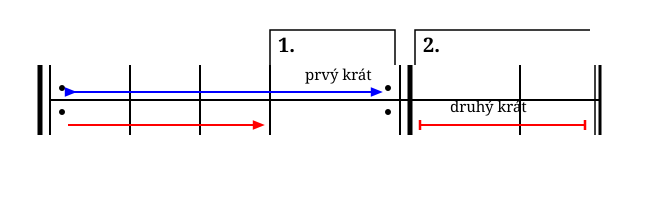
Rytmus 4/4 – 2 Druhý
V tomto rytme máme nový prvok, ktorý nazývame synkopa. Synkopa je prenesenie prízvuku z ťažkej doby na ľahkú. Je to tretia nota v takte, pod ktorou je čierna šípka. Tento prízvuk by mal byť na tretej dobe, ale je prenesený na druhú a pol doby. Dôležité je znova si vytlieskať tento rytmus (prvá - dru - há - tre - tia - štvr - tá).
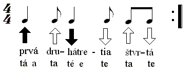
Marína (R. Kazík)
Rytmus: Druhý4/4: /: G/ G/ G/ G/ G/ G/ D7/ D7/ D7/ D7/ D7/ D7/ D7/ D7/ G/ G :/R: / : G / G / D7 / D7 / D7 / D7 / G / G : / / : G / D7 / D7 / G / G / D7 / D7 / G : / G D7
1. Kto smutný je tak naleje si vína, no pre mňa lásky vínom je Marína
G
mne nepáči sa z kina, z telky iná, ja opíjam sa vždy jej nádherou
2. Keď v tanci stvára so mnou divé sóla a tvári sa jak manekýna z móla
no teší ma, že ostatní len márne chcú zapáliť v nej lásky ohňostroj
Refr: Marína, Marína, Marína vždy spáliš ma kúzlom čo máš
Marína, Marína, Marína, keď stále sa s láskou len hráš
[: Dobrá ako víla, pre mne si Marína, no niekedy však prísne mi vravíš no,no,no :]
3. Každý z vás o šťastí iba sníva, za mojím šťastím Marína sa skrýva
veď kto ju pozná pochopil už dávno, že život pre ňu je len zábavou
Refr.
Kadencia E dur
I. dur
IV. dur
V. dur7
E
A
H7
Akord E dur sa drží tak, ako akord Ami, ale o jednu strunu vyššie (od štvrtej struny). Akord A dur držíme s 2., 3., 4. prstom. Prechod od akordu E k akordu A je taký, že 2. a 3. prst presunieme na štvrtú a tretiu strunu a priložíme 4. prst.
Pri prechode od E k H7 zadržíme 2. prst na piatej strune, 1. prst presunieme na štvrtú strunu, tretí na tretiu strunu a štvrtý položíme na prvú strunu. Prsty 2., 3., 4. sú v tom istom poli. Pri prechode od akordu A k akordu H7 zadržíme tretí prst na tretej strune a ostatné prsty preložíme na príslušné struny.
Júlia (K. Konárik)
Rytmus: Druhý4/4: / : E / E / E / E / A / A / E / E / E / E : /R: / : E / E / H7 / H7 / H7 / H7 / E / E : / / : H7 / E / H7 / E : / E
1. Pyšná bábika, prelud čo z rúk mi stále uniká,
A E
chvíľu dieťa chvíľu dospelá si ty Júlia.
E
Dievča z obrázku vidím, že stvorená si pre lásku,
A E
čo si ty už dávno vedela dnes viem i ja.
E
Refr: Júlia si slnko v sieti, Júlia si čarovná,
A E
snáď len dúha v očiach detí, krásou sa ti vyrovná.
H7 E
/: Kruh mojich lások je uzavretý, tam dávno vládneš už jedine ty. :/
2. Malá koketa, šťastie je vratké ako ruleta,
chvíľu dieťa, chvíľu dospelá si ty Júlia.
Dievča z plagátu vidím ťa záhadnú i usmiatu,
čo si ty už dávno vedela dnes viem i ja.
Plavovláska (O. Weiter)
Rytmus: Druhý4/4: / : D / D / D / D / G / G / G / G / A7 / A7 / D / D : /R: / : A7 / D / A7 / D : / D
1. Pri jednej plavovláske, čo mužov nemá v láske,
G A7 D
som zhorel na otázke o šťastí.
D
Vraj láska je vždy klamná a starosť prenáramná,
G A7 D
že nevydá sa za mňa, že som zlý, óóó tá plavovláska.
A7 D
Refr: Že ona je stvorená bez lásky žiť,
A7 D
že jej nežné ramená nesmie nik pohladiť,
A7 D
že dnes má zlé tušenie, že má zlý deň,
A7 D
že mám oči zasnené a v očiach čierny sen.
2. Chcel som ju vziať do sveta, tá kráska ma odmieta a zrak sa jej trblieta ohňom zlým.
Vraj príliš mám smelé sny, vraj príliš som na slečny
a vraj len vtedy bezpečný, keď spím óóó tá mužská cháska.
Refr.
Tisíc mil (Waldemar Matuška)
Rytmus: Druhý4/4: / G / Emi / Ami / C / Ami / D7 / D7 / D7 /R: / G / Emi / Ami / C / Ami / D7 / G / G : / G Emi Ami C
1. V nohách mám už tisíc mil, stopy déšť a vítr smyl
Ami D7 G
a můj kůň i já jsme cestou znavení.
G Emi Ami C
Refr1: Těch tisíc mil, těch tisíc mil má jeden směr a jeden cíl,
Ami D7 G
bílej dům, to malý bílý stavení.
2. Je tam stráň a příkrej sráz, modrá tůň a bobří hráz,
táta s mámou, který věřej dětskejm snům.
Refr2: Těch tisíc mil, těch tisíc mil, má jeden směr a jeden cíl,
jeden cíl, ten starej, známej, bílej dům.
3. V nohách mám už tisíc mil, teď mi zbývá jen pár chvil,
cestu znám a tá se tam k nám nemění.
Refr1.
4. Kousek dál a já to vím, uvidím už stoupat dým,
šikmej štít nad střechy ční k nebesům.
Refr2.
Elena (O. Weiter)
Rytmus: Druhý4/4: / D / D / D / D / D / D / D / D / : G / G / D / D / A / A / D / D : /R: / : A / A / D / D : / / : G / G / D / D / G / G / D / D : / D
1. Letným ránom kráčal som na pláž, známym smerom tam, kde deku máš
G D A D
[: pozerám sa hľadám oči, krásne oči tie, snáď ma srdce až k nim zavedie :]
A D A D
Refr: Elena ty si život môj, Elena chcem byť iba tvoj
G D A D
[: Elena lásku mi vráť, Elena veď ma maj rád :]
2. Prišiel večer zaspal slnka žiar, z pláže sme šli ako šťastný pár
[: Srdce plesá ľúbime sa je to amor sám, čo nás vedie do spoločných rán :]
Refr.
Molová tónina – kadencia a mol
I. mi (mol)
IV. mi (mol)
V. dur7
Ami
Dmi
E7
V molovej tónine sú na prvom a štvrtom stupni molové akordy, na piatom stupni je durový septakord.
Molové akordy sa označujú značkou mi (napr. Ami), niekedy sa v značkách píšu malými písmenami, alebo skratkou „A_“.
Akord Dmi môžeme tiež držať s 1., 2., 3. prstom. Pri prechode z Dmi do E7 je lepšie držať štvrtý prst na druhej strune, ktorý ostáva ležať a prenášame len 1., 2. a 3. prst. Akord E7 má tu iný tvar, ale môžeme používať aj predošlý tvar, ak nám tento ešte robí problémy.
ℹ️ V durovej tónine boli na vedľajších stupňoch molové akordy – v molovej tónine sú na vedľajších stupňoch najčastejšie durové akordy. V tónine a mol je na III. stupni akord C dur.
A aký ty parobok
Rytmus: Polka2/4: / : Ami / Ami / C / C / Dmi / Dmi / E7 / E7 : / / Ami / Ami / Dmi / Dmi / E7 / E7 / Ami / Ami : / Ami C
1. /: A aký ty parobok, taká i ja dzivka :/
Dmi E7 Ami
/: podzme še poľubic do hušeho chlivka :/
2. /: A jak sme še ľubeli, tak huši gagali :/
/: bodaj tote huši šicke pozdychali :/
3. /: Šicke pozdychali, lem jedna ostala :/
/: i totu moja mac včera zarezala :/
Kadencia e mol
I. mi
IV. mi
V. dur7
Emi
Ami
H7
Akord Emi držíme druhým a tretím prstom – je to preto, že niekedy sa môže akord Emi zmeniť na akord E7, ktorý je mimotonálnou dominantou k akordu Ami.
Keď ja na Toryse
Rytmus: Valčík3/4: / : Emi / Emi / Emi / Ami / H7 / H7 : / / : G / D7 / G / H7 / H7 / Emi / Emi : / Emi Ami H7
1. /: Keď ja na Toryše nožky umyvala : /
G D7 G H7 Emi
/: popod mojo nožky rybka preplyvala : /
2. /: Plivaj, rybko plivaj popod bystru vodu : /
/: kebym plivac znala plivala bym s tebu : /
3. /: Keď ja na Toryše nožky umyvala : /
/: ponad mojo nožky žabka preskakala : /
4. /: Skakaj žabko, skakaj, ponad bystrú vodu : /
/: kebym skakac znala skakala bym s tebu : /
ℹ️ V tejto piesni, ktorá je v tónine e mol, sa objavila tiež časť kadencie G dur (G, D7). Obe stupnice majú rovnaké predznamenanie (1 krížik).
Miešanie tónin
Akordy v skladbe nemusia patriť len do danej kadencie. Každý akord si môžeme predstaviť ako samostatný akord a tak môžeme prejsť do inej tóniny (napr. Ami je prvý stupeň v tónine a mol, druhý stupeň v tónine G dur, tretí stupeň v tónine F dur, šiesty stupeň v tónine C dur).
Niektoré skladby sú komponované tak, že jedna časť môže byť v molovej tónine – sloha, a druhá časť v durovej tónine – refrén.
Najplynulejší prechod z molovej tóniny do durovej je vtedy, ak majú obe stupnice rovnaké predznamenanie. Sú to rovnobežné – paralelné stupnice (e mol - G dur). Často sa stretávame aj s prechodom z molovej tóniny do rovnomennej durovej (a mol - A dur).
Má drahá dej mi víc (Olympic)
Rytmus: Druhý4/4: /: Emi/ Emi/ Emi/ G/ Emi/ Emi/ D/ H7/ Emi/ Emi/ A/ Ami/ Emi/ H7/ Emi/ 1. Emi : // 2. D7 /R: / G / G / H7 / H7 / Emi / C / G / D7 / G / G / H7 / H7 / Emi / C / G / H7 / H7 / Emi G
1. Vymyslel jsem spoustu nápadů, aúú, co podporujou hloupou náladu, aúú,
Emi D H7 Emi A Ami Emi H7 Emi
hodit klíče do kanálu, sjet po zadku holou skálu, v noci chodit strašit do hradů, aúú.
Dám si svoje housle pod bradu, aúú, v bílé plachtě chodím pozadu, aúú,
úplně melancholicky, s citem pro věc jako vždycky, vyrábím tu hradní záhadu, aúú.
G H7 Emi C G D7 G
Refr: Má drahá dej mi víc, má drahá dej mi víc, má drahá dej mi víc své lásky, aúú.
G H7 Emi C G H7 Emi
Já nechci skoro nic, já nechci skoro nic, já chci jen pohladit tvé vlásky, aúú.
2. Poslední z těch divnejch nápadů, aúú, mi dokonale zvednul náladu, aúú,
natrhám ti sedmikrásky, tebe celou s tvými vlásky, zamknu si na sedm západů, aúú.
💡 Táto skladba je napísaná v tónine e mol, ale v refréne sa prechádza do paralelnej tóniny G dur.
Bedna od whisky
Rytmus: Druhý4/4: Ami / C / Ami / E / Ami / C / Ami E / 1. Ami / 2. A / AR: A / D / E / A / A / D / E / A / A / D / E / A / A / G / E / A / A / Ami Ami C Ami E Ami C Ami E Ami
1. Dneska už mi fóry ňák nejdou přes pysky, stojím s dlouhou kravatou na bedně od whisky.
Ami C Ami E Ami C Ami E Ami
Stojím s dlouhým obojkem, jak stájovej pinč, tu kravatu co nosím, mi navlík soudce lynč.
A D E A
Refr: Tak kopni do tý bedny, ať panstvo nečeká,
A D E A
jsou dlouhý schody do nebe a štreka daleká.
A D E A
Do nebeskýho baru, já sucho v krku mám,
A G E A
tak kopni do tý bedny, ať na cestu se dám.
2. Mít tak všechny bedny od whisky vypitý, postavil bych malej dům na louce ukrytý.
Postavil bych malej dům a z okna koukal ven a chlastal bych tam s Billem a chlastal by tam Ben.
3. Kdyby si se hochu jen pořád nechtěl rvát, nemusel jsi dneska na týhle bedně stát.
Moh si někde v suchu tu svojí whisky pít, nemusel jsi dneska na krku laso mít.
4. Až kopneš do tý bedny, jak se to dělává, do krku mi vostane jen dírka mrňavá.
Jenom dírka mrňavá a k smrti jenom krok, mám to smutnej konec a whisky ani lok.
💡 V tejto skladbe je sloha v molovej tónine (a mol), ale refrén prechádza do rovnomennej durovej tóniny A dur.
Na Kráľovej holi
Rytmus: Prvý4/4: Emi / Emi / H7 / H7 / Emi / Emi / G / G / D7 / D7 / G / G E7 / / : Ami / Ami / Emi / Emi / Emi / Emi / H7 / H7 / Emi / Emi : / Emi H7 Emi
1. Na Kráľovej holi stojí strom zelený,
G D7 G E7
na Kráľovej holi stojí strom zelený,
Ami Emi
/: vrch má naklonený, vrch má naklonený,
H7 Emi
vrch má naklonený do slovenskej zemi. :/
2. Odkážte, odpíšte tej mojej materi,
odkážte, odpíšte tej mojej materi,
/: že mi svadba stojí, že mi svadba stojí,
že mi svadba stojí na Kráľovej holi. :/
3. Odkážte, odpíšte mojim kamarátom,
odkážte, odpíšte mojim kamarátom,
/: že už viac nepôjdem, že už viac nepôjdem,
že už viac nepôjdem na fraj za dievčaťom. :/
4. Na nebi hviezdičky sú moje družičky,
na nebi hviezdičky sú moje družičky,
/: a guľa z kanóna, a guľa z kanóna,
a guľa z kanóna to je žena moja. :/
Macejko
Rytmus: Prvý4/4: Emi / Emi / Emi / H7 / H7 / H7 / Emi H7 / Emi / E / E / E / ER: E / E / E / A / Ami / H7 / Ami H7 / E / Emi H7 Emi H7 Emi
1. Išol Macek do Mauacek šošovičku muacic, zabudou si cepy doma, museu sa on vracic. Héééj
E
Refr: Macejko, Macejko, ko ko ko ko,
A
zahraj mi na cenko, ko ko ko ko
Ami H7
na tú cenku strunu, nu nu nu nu,
Ami H7 E
hej dzunu, dzunu, dzunu, nu nu nu nu
2. Milá moja, duša moja, kdes mi daua cepy,
tam ti visia na hambálku, vem si ich ty slepý.
Mimotonálne dominanty
Sú to dominantné septakordy, ktoré nepatria do danej tóniny, ale sú „vypožičané“ z inej tóniny. Napríklad ak je v tónine G dur sled akordov:
G — A7 — D7 — G
Akord A7 nepatrí do tejto kadencie, ale vzhľadom k nasledujúcemu akordu D je jeho dominantou (vychádza z kadencie D dur: D - G - A7). Mimotonalných dominánt môže byť v skladbe zaradených aj viac za sebou:
G — E7 — A7 — D7 — G7 — C7 — F — D7 — G
Každý z týchto septimových akordov funguje ako dominanta k nasledujúcemu akordu (s výnimkou prechodu na F).
Buráky
Rytmus: Prvý4/4: / G / G / C / G / G / G / A7 / D7 / G / G / C / G / G / G / D7 / G /R: / G / G / C / G / G / G / A7 / D7 / G / G / C / G / G / G / D7 / G / G C G
1. Když Sever válčí s Jihem a zem jde do války,
A7 D7
na polích místo bavlny teď rostou bodláky.
G C G
Ve stínu u silnice vidím z jihu vojáky,
D7 G
jak válejí se v trávě a louskaj buráky.
G C G
Refr: /: Hej hou, hej hou, nač chodit do války,
D7 G
je lepší doma sedět a louskat buráky. :/
2. Plukovník je v sedle volá Yankeeové jdou, mužstvo stále křičí, že dál už nemohou.
Plukovník se otočí a koukne do dálky, jak jeho slavná armáda teď louská buráky.
3. Až tahle válka skončí a my zas budem žít, své milenky a ženy, zas půjdem políbit.
Pak zeptaj se tě: "Hrdino, cos dělal za války?" Já flákal jsem se s kvérem a louskal buráky.
Akord G7 (hmat na všetkých strunách)
Nalej mi vína, Malvína (O. Weiter)
Rytmus: Druhý4/4: / G / G / G / Ami / D / D / D / G / G / G / G7 / C / C / G / A7 / D / D /R: / G / G / G / D / D / D / D / G / G / G / G7 / C / : C / G / D / G : / G Ami
1. V lampáši z nôt zapáli knôt, keď struny začnú tíško húsť.
D G
Prináša džbán a šepne vám načo tá vráska vôkol úst.
G G7 C
Spod čiernych rias obzrie si vás a máte chuť hrať prím.
G A7 D
Ak práve úsmev hladí jej tvár spieva aj samotár...
G D
Refr: Nalej mi vína Malvína nech mám nápev veselý,
G
nalej mi vína Malvína nech nás nič viac nedelí. Hej!
G G7 C
Nalej mi vína Malvína nech spád má každý tón, čo mám rád.
C G D G
[: Nalievaj stále veď máš plný džbán muziky, ktorú rád hrám. :]
2. V lampáši z nôt zapáli knôt a rozjarí aj prázdny kút.
Je ako mág zo starých ság, dýchne a musíš rozkvitnúť.
Spod čiernych rias obzrie si vás a máte chuť hrať prím.
Kto pri jej víne prežil pár chvíľ spieva zo všetkých síl...
ℹ️ V piesni Nalej mi vína Malvína je akord G7 mimotonalnou dominantou smerujúcou k akordu C dur a akord A7 je mimotonalnou dominantou k D7 (ktorá následne vedie do G dur).
Rytmus v 6/8 takte
Počítacou jednotkou je tu osminová nota. Jedna osminová nota znie na jednu dobu (v takte počítame do šesť).
Múr našich lások (M. Žbirka)
Rytmus: 6/86/8: D / D / Emi / Emi / A / A / D / 1. A : // 2. D /R: Emi / G / D / D / Emi / G / A / A D Emi
1. Na konci ulice stál múr našich lások
A D 1. A (2. D)
múr detí postrácaných, čo nechcel nik.
D Emi
Na konci ulice stál múr našich lások
A D
len on nás počúval rád, čistých a zlých.
Na konci ulice stál múr našich lások
čakal som večer pred ním s hádankou kam.
Na konci ulice stál múr našich lások
zmoknuté plagáty kín, zostal som sám.
Emi G D
Refr: Múr detí stratených, každé z nich učil rásť,
Emi G A
múr detí stratených, čo musia seba nájsť.
2. Na konci ulice stál múr našich lások, poznal on túlavých psov, dievčenský žiaľ.
Na konci ulice stál múr našich lások, na ňom som sedel raz s tou, čo rád som mal.
Na konci ulice stál múr našich lások, múr detí postrácaných, kto by ich chcel.
Na konci ulice stál múr našich lások, značil si kto kedy s kým, popri ňom išiel.
Bláznova ukolébavka (P. Novák)
Rytmus: 6/86/8: / G / D / C / G / G / D / C / G / D / C / D / CD / G / D / C / A /R: / G / C / G / C / G / C / G / G / G D C G
1. Máš má ovečko dávno spát i píseň ptáků končí.
G D C G
Kvůli nám přestal vítr vát, jen můra zírá zvenčí.
D C D C D
Já znám její zášť, tak vyhledej skrýš,
G D C A
zas má bílej plášť a v okně je mříž.
G C G C
Refr: Máš má ovečko dávno spát a můžeš hřát, ty mně můžeš hřát.
G C G
Vždyť přijdou se ptát, zítra zas přijdou se ptát,
G
jestli ty v mých představách už mizíš.
2. Máš má ovečko dávno spát, dnes máme půlnoc temnou,
ráno budou nám bláznům lát, že ráda snídáš se mnou.
proč měl bych jim lhát, že jsem tady sám, když tebe mám rád, když tebe tu mám.
Striedavý tón
Je taký tón, ktorý vystrieda akordický tón na ľahkej dobe. Najčastejším striedavým tónom býva kvarta – štvrtý tón od základného tónu.
Akord D dur má tóny $d - fis - a$. Striedavý tón vystrieda terciu (teda tón $fis$) a vzniknutý akord D s kvartou (D4 / Dsus4) bude obsahovať tóny $d - g - a$.
Kdo má tě rád (L. Vondráčková)
Rytmus: 6/86/8: / DD4 / D / DD4 / D / G / G / G / G / A / A // 1. DD4 / D : // 2. D / D7 /R: / : G / A / D / H7 / Emi / A / 1. D / D7 : // 2. DD4 / D / D D4 D D4 D
1. Jen ten kdo má tě rád, ten nemá proč ti lhát
G A
a všechno smí ti říct, jen ten kdo má tě rád
D
se díva a říka, to dá se zvládnout.
2. Jen s tím kdo má tě rád, s tím můžeš počítat
a průšvih nehrozí, když ten kdo má tě rád
tě hlída a říka to dá se zvládnout.
G A D H7
Refr: Všechno si můžeš vzít, všechno si můžeš přát,
Emi A D D7
když světem půjdeš s tím, kdo tě má rád.
G A D H7
Všechno ti půjde líp, všechno ti půjde snáz,
Emi A D
když světem půjdeš s tím, kdo tě má rád.
3. A jednou já to vím se zázrak může stát, jak ve snů bláhový, pak ten kdo má tě rád
tě líba a říka to dá se zvládnout.
Pak slunce pálí víc a hvězdy září dál, všem snům pak můžeš říct, dnes ten, kdo má mě rás
mi zpíva a říka to dá se zvládnout.
Akord na VII. stupni
Na VII. stupni používame najčastejšie zmenšený akord. Tento akord môže zastupovať dominantu a vtedy smeruje priamo k tónike (alebo sa zaraďuje tesne pred dominantu). Značí sa príponou dim (z anglického diminished = zmenšený).
Tento konkrétny hmat predstavuje viacero akordov naraz, pretože v zmenšenom septakorde (ktorý je symetrický) môže byť každý tón považovaný za základný. Podľa kontextu tak rovnakým hmatom hráme akordy C#dim, Gdim, Edim, Bdim alebo Dbdim.
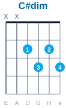
Stánky (Nedvědi)
Rytmus: Druhý4/4: / : D / G / D / C#dim / D / A7 / D / D : /R: / G / A7 / D / C#dim / D / A7 / D / D / D G D C#dim
1. U stánků na levnou krásu postávaj a smějou se času,
D A7 D
s cigaretou a holkou, co nemá kam jít.
D G D C#dim
Skleniček pár a pár tahů z trávy, uteče den, jak večerní zprávy,
D A7 D
neuměj žít a bouřej se a neposlouchaj.
G A7 D C#dim
Refr: Jen zahlídli svět, maj na duši vrásky, tak málo je, málo je lásky,
D A7 D
ztracená víra hrozny z vinic neposbírá.
2. U stánku na levnou krásu postávaj a ze slov a hlasů poznávám,
jak málo jsme jim stačili dát.
Akord D#dim
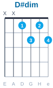
Tichá noc (F. X. Gruber)
Rytmus: Valčík (3/4)3/4: / G / G / G / G / D7 / D7 / G / G / / C / C / G / G / C / C / G / G / / D7 / D#dim / Emi / A7 / G / D7 / G / G / G
1. Tichá noc, svätá noc, všetko spí, všetko sní.
C G C G
Sám len svätý bdie dôverný pár, stráži dieťatko nebeský dar.
D7 D#dim Emi A7 G D7 G
Sladký Ježiško spí, sní, nebesky ticho spí, sní.
2. Tichá noc, svätá noc, anjeli, zleteli,
najprv pastierom podali zvesť, ktorá svetom dnes dáva sa niesť
Kristus Spasiteľ je tu, tešiteľ sveta je tu.
3. Tichá noc, svätá noc, nežná tvár, lásky žiar
božsky rozsieva v jasličkách tam, bije záchranná hodina nám
v tvojom zrodení Boh Syn, Ježiško, Láska, Boh, Syn.
4. Tichá noc, svätá noc, Spásy liek prijal svet,
otvorila sa nebies už sieň, milosť zahnala ta hriechov tieň,
Takú Ježiško moc máš, Sláva Ti, Ježiš, Kráľ náš!
5. Tichá noc, svätá noc, v dnešnú noc večná moc
Lásky Otca sa vyliala v svet, vrelo prijal nás v objatie dnes
božský Spasiteľ, brat náš, vďaka ti božský brat náš!
💡 Tip pre hmat: V treťom riadku akordov prvý akord D7 chytíme 2., 3. a 4. prstom. Priložením 1. prstu na štvrtú strunu plynule dostaneme požadovaný akord D#dim.
Jožin z Bažin (I. Mládek)
Rytmus: Druhý4/4: / : Emi/ Emi/ H7/ Emi : / D7/ G/ D7/ G H7/ Emi/ Emi/ H7/ Emi D7/ /: G/ G/ G Gdim/ D7/ D7/ D7/ D7/ G :/ C/ G/ D7/ G/ C/ G/ D7/ G H7/ Emi H7 Emi
1. Jedu takhle tábořit Škodou sto na Oravu.
H7 Emi
Spěchám, proto riskuju, projíždím přes Moravu.
D7 G D7 G H7
Řádí tam to strašidlo, vystupuje z bažin,
Emi H7 Emi D7
žere hlavně Pražáky, jmenuje se Jožin.
G
Refr: Jožin z bažin močálem se plíží,
D7
Jožin z bažin k vesnici se blíží.
D7
Jožin z bažin už si zuby brousí,
G
Jožin z bažin kouše, saje, rdousí.
C G
Na Jožina z bažin, koho by to napadlo,
D7 G
platí jen a pouze práškovací letadlo.
2. Projížděl jsem dědinou cestou na Vizovice.
Přivítal mě předseda, řek mi u slivovice:
"Živého či mrtvého Jožina, kdo přivede,
tomu já dám za ženu dceru a půl JZD."
3. Říkám: "Dej mi, předsedo, letadlo a prášek,
Jožina ti přivedu, nevidím v tom háček."
Předseda mi vyhověl, ráno jsem se vznesl,
na Jožina z letadla prášek pěkně klesl.
Refr: Jožin z bažin už je celý bílý,
Jožin z bažin z močálu ven pílí.
Jožin z bažin dostal se na kámen,
Jožin z bažin, tady je s ním amen.
Jožina jsem dohnal, už ho držím, johoho,
každá kačka dobrá, prodám já ho do ZOO.
Rytmus v 4/4 - 3 Tretí
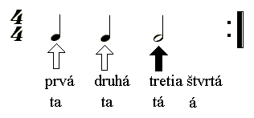
Som v tom (Team)
Rytmus: Tretí4://: D / G / D / G / D / G / D / G :/// C / G / D / D / C / G / DC / C /R: //: D /D /C /C /C /G /1. D /D :// 2.DC /C /
1.Viem, som v tom, už sa z kopca kotúľam.
Viem, som v tom, končí zvodca Don Juan.
Miesto krátkej story ohňostroj. Som z nej celkom chorý kamoš môj.
Refrén:
Náš vzťah sa vyvíja, smerom k láske mením svoj kurz.
Už ma má, tak to vidím ja, Je to ťažké poradiť skús.
2. Ona je kus, čo s ňou? Je to ťažké, kamarát.
Som jej prvý muž, nevravím každej: Mám ťa rád.
Zrazu mám strach, či mi zavolá, krásny zádumčivý hlavolam.
Refrén:
Náš vzťah sa vyvíja, smerom k láske mením svoj kurz.
Už ma má, tak to vidím ja, Je to ťažké poradiť skús.
V tejto piesni držíme vždy iba jeden akord "D", ktorý posúvame po hmatníku.
Prvý prst na hmatníku (ukazovák) nám udáva polohu.
Ak je ukazovák v druhom poli je to akord D, vo štvrtom poli je to akord E a v siedmom poli akord G.
4: //: D / E / G / D / D / E / G / D ://R://: E / G / D / E / G / D ://
1.Stratený život zlý sen, zvädnuté kvety zabitý deň.
Zlá karta, falošný tón to nie je pravda, to nie je on.
Boľavá hlava, stratený čas, poľná tráva a zlomený vlas.
Deravé vrecko a nezvaný hosť, všetko je nanič a nič nie je dosť.
Refrén:
Ale, keď ráno vstanem z postele, všetko sa pekne krásne rozbehne.
Ťažká doba a prebdená noc, prasknutá struna a zlomený nos.
Posledná šanca, zlomený kôl, lenivý sluha a špinavý stôl.
Stratené roky, tupý zrak, vlčia tma a nízky tlak.
Žiadny národ a samá zlosť, všetko je nanič a nič nie je dosť.
Refrén:
//: Ale, keď ráno vstanem z postele,
všetko sa pekne krásne rozbehne. ://
Nech už máš pravdu Ty či ja, aj tak to všetko pôjde do hája.
Rytmus v 4/4 - 5 Piaty
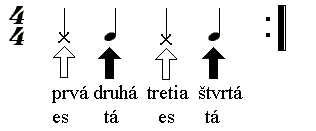
Zas príde máj - SALKO
Rytmus: Piaty4: Emi/ Emi/Ami/ Ami/ Emi/ Emi/Ami/ Ami/ Emi/ Emi/Ami/ Ami/ Emi/ Emi/Ami/ Ami/Ami / Ami / D / D / Ami / Ami / D / D /R: //: G/ C/ G/ D/ G/ C/ D/ D/ C6/ D/ C6/ D/ C6/ D/ G/ G ://
1.Január je studený, vo februári sa nič nezmení
v marci som sa narodil, apríl nás už správne naladil
a preto, hej, už za pár dní, nám srdce rozohní, jéé
Refrén:
Zas príde máj, ten lásky čas každý z nás ju bude chcieť
ale lásky je málo pre ten veľký svet musíme to lepšie vymyslieť.
2.Celý jún má deti rád v júli vonku párty, v noci nejdeš spať
augustové lúčenie, september ti smútok zaženie
a preto, hej, už za pár dní nám srdce rozohní, jéé
Refrén:
Zas príde máj, ten lásky čas každý z nás ju bude chcieť
ale lásky je málo pre ten veľký svet musíme to lepšie vymyslieť.
Rytmus v 4/4 - 6 Šiesty
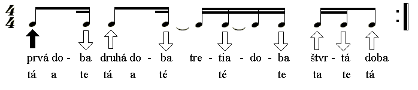
Modrá - J.KIRSCHNER
Rytmus: Šiesty4://: G / G / C9 / C9 / D / D / G / G ://R: Emi / D / G / A / Emi / D / G / C9 / G / C9 /
1.Mesiac sedí na strome, niekto klope v mojom sne
chcem takého ako ty si zo mňa celkom opitý
Mám stále ťa mám
Môžme behať bosí a nahí ako vtedy,
keď si bol malý chlapec, čo sa časom mení
Mám stále ťa mám
Refrén:
Ležíš so mnou na perách do mňa padáš ako dážď
si tu so mnou kým ja spím, mám, stále ťa mám, stále ťa mám
stále ťa mám
2.Motýľ ti spí na perách, sen tu stojí pri dverách
chcem takého ako ty si zo mňa celkom opitý
Mám stále ťa mám
Môžme behať bosí a nahí ako vtedy,
keď si bol malý chlapec, čo sa časom mení
Mám stále ťa mám
Refrén:
Ležíš so mnou na perách do mňa padáš ako dážď
si tu so mnou kým ja spím, mám, stále ťa mám, stále ťa mám
stále ťa mám
Refrén:
Ležíš so mnou na perách do mňa padáš ako dážď
si tu so mnou kým ja spím, mám, stále ťa mám, stále ťa mám
stále ťa mám...
Rytmus v 4/4 - 7 Siedmy
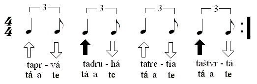
Náklaďák - P.ČERNOCKÁ
Rytmus: Siedmy4: C/ C/ G/ G/ G7/ G7/ C/ C/ C/ C7/ F/ F/ C/ G7/ C ://
1.Měl v ramenou víc, než se zdá a v očích místá vzdálená
jak noční stín svůj trajler hnal na plný plyn stále dál a dál.
Znal míle dní a týdny mil, stokrát s dálkou zápasil,
stokrát měl smrt blíž než cíl a přesto jel znovu vítězil.
2.Měl v rukou cit i pevný stisk, musel mít svůj denní risk
měl prostě rád jako nebe pták, svůj řvoucí dům šedý náklaďák.
Uměl se smát i vítr zmást, z očí žár a úsvit krást
chtěl se hnát a být jen tím, čím chlap je rád, když je pánem svým.
3.Snad řek mi víc než dnes já vám, když vez mě tmou až bůhví kam
a možná vím proč létá pták, proč muži řídí náklaďák.
Umím se smát i vítr zmást, ze rtů dálek úsvit krást
věčně žít své týdny mil a v rukou mít lásku svou i cíl.
Rytmus v 4/4 - 7 Rumba
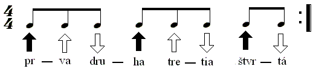
Tisíc mil - Trad.
Rytmus: Rumba4: G / Emi / Ami / C / Ami / D7 / G / G ://
1. [G]V nohách mám už tisíc [Emi]mil,
stopy [Ami]déšť a vítr [C]smyl
a můj [Ami]kůň i já jsme [D7]cestou znave[G]ní.
Refrén:
Těch tisíc mil, těch tisíc mil
má jeden směr a jeden cíl,
bílej dům, to malý bílý stavění.
2.Je tam stráň a příkrej sráz,
modrá tůň a bobří hráz,
táta s mámou, který věřej dětskejm snům.
Refrén:
Těch tisíc mil, těch tisíc mil,
má jeden směr a jeden cíl,
jeden cíl, ten starej, známej, bílej dům.
3.V nohách mám už tisíc mil,
teď mi zbýva jen pár chvil,
cestu znám a tá se tam k nám nemění.
Refrén:
Těch tisíc mil, těch tisíc mil
má jeden směr a jeden cíl,
bílej dům, to malý bílý stavění.
4.Kousek dál a já to vím,
uvidím už stoupat dým,
šikmej štít nad střechy ční k nebesům.
Refrén:
Těch tisíc mil, těch tisíc mil,
má jeden směr a jeden cíl,
jeden cíl, ten starej, známej, bílej dům.
Prehľad rytmov
Cvičenia prízvukov
Harmonizácia stupnice
Základy tvorby akordov a sprievodu
💡 Hlavné pravidlo (Kadencia)
Akordy kadencie I. (C), IV. (F) a V. (G) obsahujú dohromady všetky tóny stupnice. Preto sú úplne postačujúce na základnú harmonizáciu akejkoľvek piesne v tejto tónine.
Akord je súzvuk najmenej troch tónov. Kvintakord sa skladá z 1., 3. a 5. tónu stupnice.
Tvorba akordov nad tónmi stupnice
Ak si nad každý tón stupnice postavíme 1., 3. a 5. tón, vzniknú nám akordy tejto tóniny (tzv. harmonizácia):
G
A
H
C
D
E
F
G
E
F
G
A
H
C
D
E
C
D
E
F
G
A
H
C
Vzniknuté akordy v tónine C dur
I. stupeň
C
C – E – G
ii. stupeň
Dmi
D – F – A
iii. stupeň
Emi
E – G – H
IV. stupeň
F
F – A – C
V. stupeň
G
G – H – D
vi. stupeň
Ami
A – C – E
vii. stupeň
Hmi5-
H – D – F
Ako harmonizovať jednotlivé tóny?
Každý tón stupnice sa dá harmonizovať akordom, ktorý daný tón obsahuje. Pozri sa na príklady:
Tón C môžeme harmonizovať akordmi: C, F, Ami(lebo každý z nich obsahuje tón C).